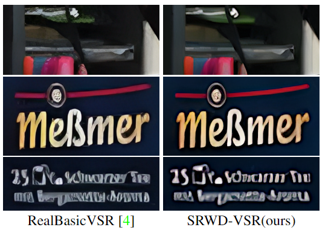

Expanding Synthetic Real-World Degradations for Blind Video Super Resolution
Mehran Jeelani*, Sadbhawna Thakur*, Noshaba Cheema, Klaus Illgner, Philipp Slusallek, Sunil Jaiswal
IEEE Conference on Computer Vision and Pattern Recognition (CVPR) Workshops, 2023This work shows how varied random degradations can contribute to learning an effective VSR model, especially for real-world video artifacts.